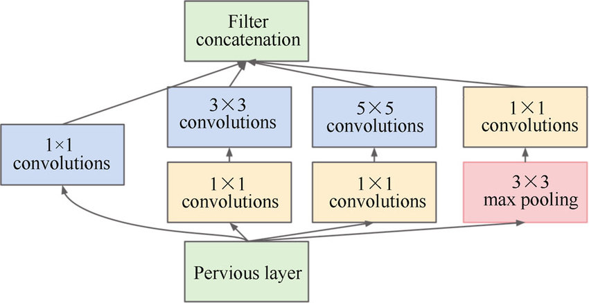
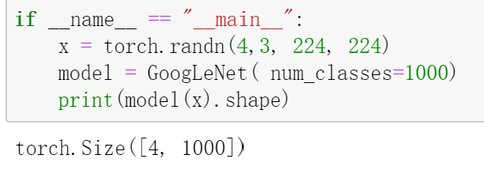

GoogLeNet
GoogLeNet，也叫做Inception，没错，翻译过来就是《盗梦空间》。
相较于之前的网络，GoogLeNet网络层数更多，网络变得更深，网络结构也变得更加复杂。
不过，虽然网络结构复杂，但由于使用了1*1卷积来减少通道数，GoogLeNet所包含的参数不增反减，这也是GoogLeNet表现如此出众的重要原因之一。
GoogleNet的网络结构参数表如下：
type：网络层类型patch size/stride：(卷积核or池化窗口)尺寸/（卷积/池化）步长output size：该层输出特征图的shape
GoogLeNet重复使用了inception，和NiN基础块一样，它也是一个单独的块，不妨记作inception block，蓝色框起来的是便是inception block需要的参数。
inception block结构如下：

inception block使用了4个并行的分支，最后在通道维度上将4个分支的结果做了concat融合。这样，网络变宽了，我们无需考虑到底是用卷积层还是池化层，卷积核的尺寸是3x3还是5x5比较好，这一切，都交给模型，让模型自己去学习。
网络结构表中inception的参数说明：
#1x1：1x1卷积输出通道数（第一分支）#3x3reduce：3x3卷积之前的1x1卷积输出通道数（第二分支）#3x3：3x3卷积输出通道数（第二分支）#5x5 reduce：5x5卷积之前的1x1卷积输出通道数（第三分支）#5x5：5x5卷积输出通道数（第三分支）pool proj：池化层后面的1x1卷积输出通道数（第四分支）
值得注意的是，inception block输出特征图的尺寸和输入图片尺寸是一样的，只是通道数发生了改变，因此4个分支的输出结果可以在通道维度上进行concat融合。
根据网络结构参数表，就可以着手实现GoogLeNet了。
PyTorch 实现GoogLeNet
由于网络中大量用到卷积-批归一化-激活操作，于是可以将其打包成一个模块conv_block：
1 | class conv_block(nn.Module): |
然后根据inception的结构图实现inception block:
1 | class Inception_block(nn.Module): |
对照GoogLeNet的网络结构参数表，实现GoogLeNet：
1 | class GoogLeNet(nn.Module): |
测试一下，输入4张224*224的3通道图片：

参考：